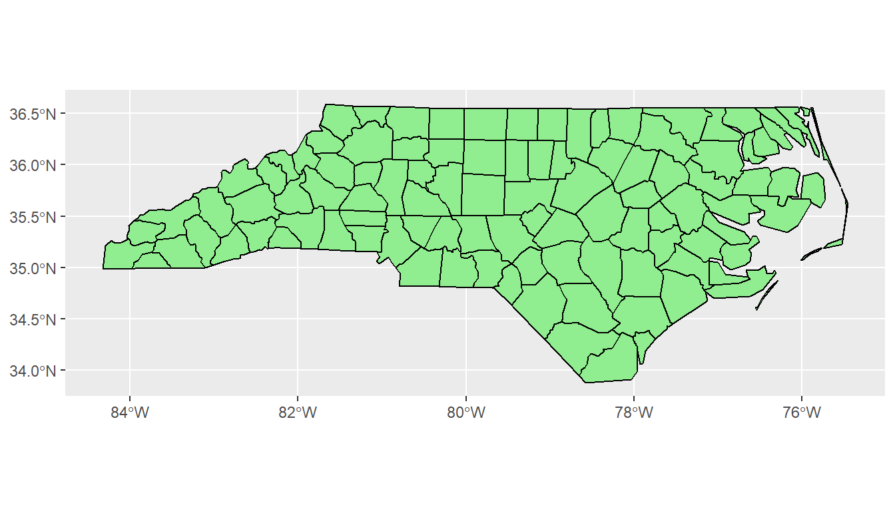
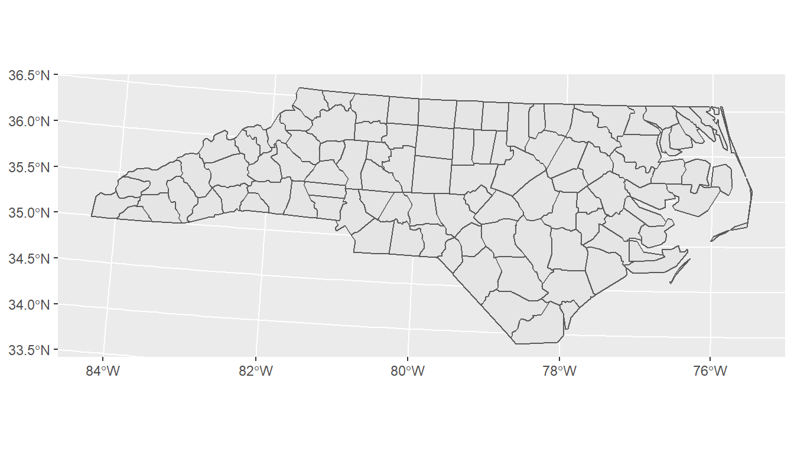
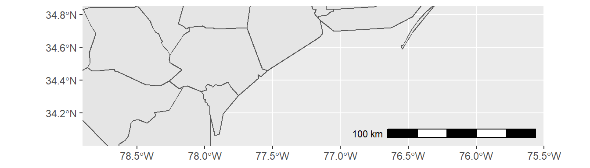
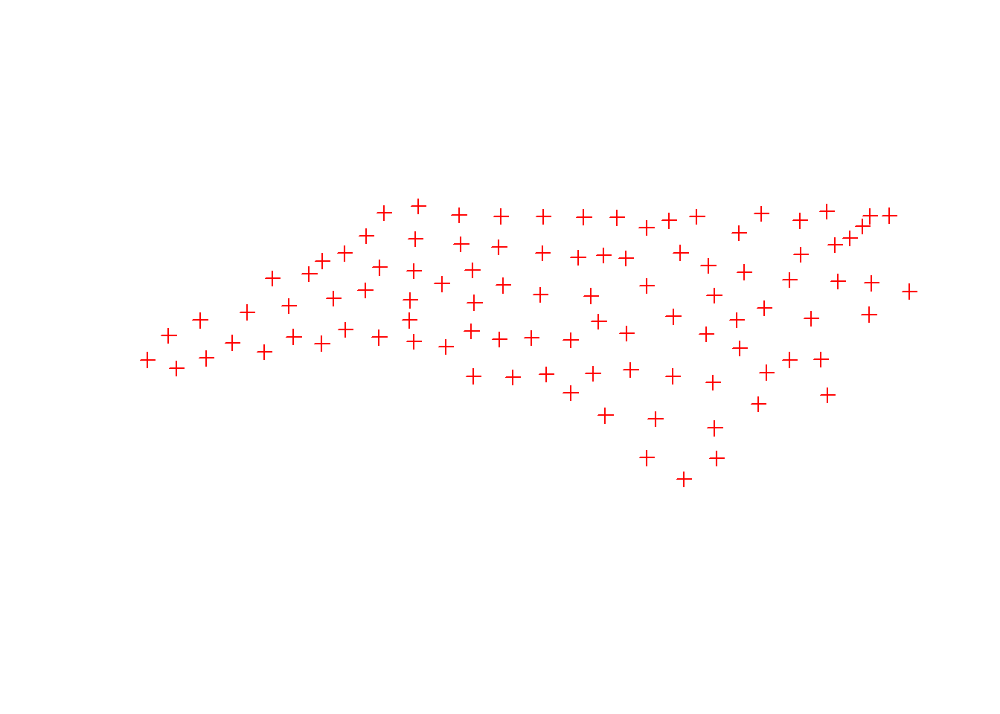

Lesson 8 Data visualization
R has a very rich set of graphical functions. The R Graph Gallery provides a large number of examples (including code).
ggplot2 library, which is the most popular library for creating graphics in R. You will learn to create standard graphs such as histograms, boxplots or scatterplots as well as maps by means of the ggplot2 library.
8.1 The Grammar of Graphics
The ggplot2 library is part of Tidyverse and offers a series of functions for creating graphics declaratively, based on the concepts outlined in the Grammar of Graphics by Leland Wilkinson.
The grammar of graphics is a schema that enables us to concisely describe the components of a graphic. These components are called layers of grammatical elements. Overall, the grammar comprises seven layers:
- Data - The data element is the dataset itself.
- Aesthetics - This layer defines how variables are mapped onto scales (see description below).
- Geometries - This element determines how our data is being displayed (e.g. bars, points, lines etc.)
- Facets - Faceting splits the data into subset and displays the same graph for every subset.
- Statistics - These are statistics derived from the data (add mean, median, quartile, etc.).
- Coordinates - This element determines the transformation of axes (e.g. change spacing of displayed data)
- Themes - This element determines the graphics background.
The aesthetics layer offers a number of different options to map data onto visual variables. A visual variable is an aspect of a mark that can be controlled to change its appearance.
Visual variables are:
- Size
- Shape
- Orientation
- Colour (hue)
- Colour value (brightness)
- Texture
- Position (map variable to x or y axis)
For instance, in Figure 8.1 variables ‘Gdp per capita’ and ‘Life Expectancy’ are mapped onto the x and y axes (visual variable position), variables ‘national population’ and ‘world regions’ are mapped onto visual variables size and color.

Figure 8.1: Visual variables color and size
In order to make that concept clearer, a number of examples will be presented in upcoming sections.
8.2 Visualization of distributions
As already announced above, functions in the ggplot2 library are structured according to the Grammar of Graphics. To create a graph in ggplot2, we need to provide input data, specify visual variables by means of an aesthetics element (aes()), specify the geometry of marks (e.g., geom_point) and apply transformations (axis spacing) and themes (background theme of the graph).
We start the analysis with a simple histogram, to explore the distribution of air quality data that has been measured at different locations in Upper Austria.
The data includes the following variables
The following code renders the first five lines of the dataset in a knitr table:
library(tidyverse)
library(knitr)
#read csv data, Note: Semicolon seperated CSVs can be loaded by function 'read_delim()'
airquality <- read_delim("data/AirQualityUpperAut.csv", delim = ";")
airquality %>%
dplyr::slice_head(n = 5) %>%
knitr::kable()| time | station | component | meantype | unit | value |
|---|---|---|---|---|---|
| 21.10.2021 13:30 | C001 | BOE | HMW | m/s | 14.1 |
| 21.10.2021 14:00 | C001 | BOE | HMW | m/s | 12.0 |
| 21.10.2021 14:30 | C001 | BOE | HMW | m/s | 10.1 |
| 21.10.2021 15:00 | C001 | BOE | HMW | m/s | 7.9 |
| 21.10.2021 15:30 | C001 | BOE | HMW | m/s | 9.2 |
The code below filters the airquality dataset by measurement component and temporal resolution. Then the data subset is passed as a first argument to function ggplot(). In the second argument, we map the variable value onto the x-axis with the aesthetics argument aes(). geom_histogram() specifies the geometry of the plot and theme_bw() is used to add a background theme.
#filter NO2 measurements with temporal resolution 30min (HMW)
airquality %>%
dplyr::filter(component == "NO2" & meantype == "HMW") %>%
#create plot
ggplot2::ggplot(., #the dot '.' represents the piped value
aes(
x = value #map variable 'value' onto x-axis
)
) +
ggplot2::geom_histogram() + #define geometry
ggplot2::theme_bw() #define theme
If we aim to distinguish between measurements of respective measurement stations, we can map the variable ‘station’ onto visual variable color:
airquality %>%
dplyr::filter(component == "NO2" & meantype == "HMW") %>%
dplyr::filter(station == "S125" | station == "S431" | station == "S270") %>% #select 3 stations
ggplot2::ggplot(.,
aes(
x = value,
fill = station
)
) +
ggplot2::xlab("NO2 [mg/m^3]") +
ggplot2::ylab("Count") +
scale_fill_manual(name = "Measurement stations", values = c("grey20", "grey50", "grey80")) +
ggplot2::geom_histogram() +
ggplot2::theme_bw() 
This is implemented by adding an attribute fill = station to the aesthetics element (aes()). ggplot2 offers a number of functions to specify your own set of mappings from levels in the data to aesthetic values. In the example above the function scale_fill_manual() is used to map the three levels S125, S270 and S431 to the fill colors grey20, grey50 and grey80. Instead of ggplot colors, you can also use hex color codes.
Note that plot components are added by means of a plus ‘+’ sign. It allows you to start simple, and then get more and more complex.
So far, we have added two axis labels. Create a new R-Script, download the input data, recreate the histogram and insert one additional line of code to add a plot title (see documentation).
See solution!
Insert title:
ggplot2::ggtitle(“Nitrogen dioxide concentration”)
8.3 Boxplots
The same basic syntax is used to create other types of plots like bar plots (use geometry geom_bar() or geom_col(), line plots (use geometry geom_line()) and many others.
For instance, if we replace geom_histogram() by geom_boxplot(), the value distribution of NO2 measurements is visualized by means of a box plot:
#filter NO2 measurements with temporal resolution 30min (HMW)
airquality %>%
dplyr::filter(component == "NO2" & meantype == "HMW") %>%
#create plot
ggplot2::ggplot(., #the dot '.' represents the piped value
aes(
x = value #map variable 'value' onto x-axis
)
) +
ggplot2::xlab("NO2 [mg/m^3]") +
ggplot2::geom_boxplot() + #define geometry
ggplot2::theme(
axis.text.y = element_blank(), #remove text and ticks from y axis
axis.ticks.y = element_blank()
)
Note that the last two lines remove text and tick marks from the y-axis of the plot.
Just as histograms, box plots are used to inspect distributions in data. The interpretation, however, does require some additional information.
The lower and upper edge of the box (the so-called lower and upper hinges) correspond to the first and third quartiles. The vertical line that separates the box indicates the median value (second quartile).
The upper whisker extends from the hinge to the largest value no further than 1.5 * IQR from the hinge (where IQR is the inter-quartile range, or distance between the first and third quartiles). The lower whisker extends from the hinge to the smallest value at most 1.5 * IQR of the hinge. Data beyond the end of the whiskers are called “outlying” points and are plotted individually.
In our histogram examples, we have mapped the variable ‘station’ onto visual variable color to separately visualize measurements of different stations. Try to apply the same approach to render measurements of stations S125, S270 and S431 separately in a box plot.
See my solution!8.4 Scatterplots
While boxplots and histograms reveal distributions in data, scatterplots are used to illustrate relationships between variables.
In the following example, air temperature (TEMP) and relative humidity (RF) measured in a 30min interval by station ’S108‘ are filtered from data table ’airquality‘. Then the two tables are joined by their common field ’time‘. The joined table is used as data input to render a scatterplot with temperature on the x-axis and relative humidity on the y-axis.
#half-hourly temperature measurement of station S108 to data frame
temp_tab <- airquality %>%
dplyr::filter(component == "TEMP" & meantype == "HMW" & station == "S108")
#half-hourly relative humidity measurement of station S108 to data frame
humidity_tab <- airquality %>%
dplyr::filter(component == "RF" & meantype == "HMW" & station == "S108")
#join humidity and temperature tables by common field 'time'
temp_tab %>%
dplyr::inner_join(
# right table
humidity_tab,
# columns to match
by = c("time" = "time")
) %>%
dplyr::select(time, value.x, value.y) %>% #select relevant columns from joined table
#create plot
ggplot2::ggplot(.,
aes(
x = value.x,
y = value.y
)
) +
ggplot2::xlab("air temperature [°C]") +
ggplot2::ylab("relative humidity [%]") +
ggplot2::geom_point(color="blue") + #define geometry scatterplot, with point color blue
ggplot2::geom_smooth(method=lm , color="red", fill="#69b3a2", se=TRUE) + #with linear trend and confidence interval
ggplot2::theme_minimal() 
The plot reveals a trend between the two variables temperature and humidity. Relative humidity tends to increase as temperature decreases and vice versa. In this video you can find an explanation for the inverse proportional relationship between relative humidity and air temperature.
Obviously, due to other predictors such as windspeed, evaporation etc., this relationship is not perfectly linear, however, it can be closely approximated by means of a linear regression line. Deviations from the linear model are indicated by a 95% confidence interval.
Copy and run the code example from above in a new R-Script. Note that the air quality data as well as the tidyverse library must be loaded to run the code in a standalone R-script file.
Go through the code example line by line and answer the following questions:
- How many measurements (records) are included in the scatterplot?
- What is value.x and value.y?
- We have used the function
geom_smooth()to fit a linear regression model (method = lm). What is the purpose of argumentse?
See answers!
- Measurements between 21.10.2021 14:00 and 22.10.2021 12:00, half-hourly interval -> 45 records (see environment tab in RStudio)
- Temperature and humidity values in the data frame tables
humidity_tabandtemp_tabare both denotedvalue. In order to avoid ambiguities, the join function renames columns. - The argument defines whether confidence bounds are displayed (
seis TRUE by default).
8.5 Map visualization
In the previous lesson you have already learned how to read vector data and create simple map layouts by means of the plot() function. In this concluding section, we will use the ggplot() library to create more complex map layouts.
In order to replicate the code examples below, you will have to install and load the libraries sf() (remember: sf stands for simple features and is used to read and write vector data) and ggplot(). Also download the North Carolina and US States sample datasets.
First, let us start with creating a single-layer base map:
library(sf)
library("ggplot2")
nc <- sf::st_read("data/nc.shp")
ggplot(data = nc) +
geom_sf() +
xlab("Longitude") + ylab("Latitude") +
ggtitle("North Carolina", subtitle = paste0("(", length(unique(nc$NAME)), " counties)"))
In the code above, we first load the North Carolina shapefile as an sf() object and then assign the data to the ggplot() graph. The geom_sf function adds a geometry stored in a sf object. Other map components such as title and axis labels are added by means of a plus sign. Note that length(unique(nc$NAME)) returns the count of table rows, which corresponds to the number of geometries/counties. Geometry count and string “counties” are concatenated by function paste0().
The geometry element geom_sf provides a number of arguments to customize the appearance of vector features:
ggplot(data = nc) +
geom_sf(color = "black", fill = "lightgreen")
Data can also be mapped onto visual variables in the same way as with diagram plots. In the example below, the variable AREA is mapped onto visual variable fill color:
ggplot(data = nc) +
geom_sf(aes(fill = AREA)) +
scale_fill_viridis_c(option = "plasma", trans = "sqrt")
The function coord_sf() allows to deal with the coordinate system, which includes both projection and extent of the map. By default, the map will use the coordinate system of the first layer or if the layer has no coordinate system, fall back on the geographic coordinate system WGS84. Using the argument crs, it is possible to override this setting, and project on the fly to any projection that has an EPSG code. For instance, we may change the coordinate system to EPSG 32618, which corresponds to WGS 84 / UTM zone 18N:
ggplot(data = nc) +
geom_sf() +
coord_sf(crs = st_crs(32618))
The extent of the map can also be set in coord_sf, in practice allowing to “zoom” in the area of interest, provided by limits on the x-axis (xlim), and on the y-axis (ylim). The limits are automatically expanded by a fraction to ensure that data and axes do not overlap; it can also be turned off to exactly match the limits provided with expand = FALSE:
library("ggspatial")
ggplot(data = nc) +
geom_sf() +
coord_sf(xlim = c(-78.9, -75.5), ylim = c(34, 34.85), expand = FALSE) +
annotation_scale(location = "br", width_hint = 0.5) +
annotation_north_arrow(location = "bl", which_north = "true",
pad_x = unit(14.5, "cm"), pad_y = unit(0.8, "cm"),
style = north_arrow_fancy_orienteering) 
Note that scale bar and north arrow are available with package ggspatial.
In the following example, we will assign labels to vector features. The function geom_text() can be used to add a layer of text to a map using geographic coordinates. The North Carolina dataset contains county names as column (column: NAME). In order to define label positions, we take the centroids of the county polygons (function st_centroid()), derive X and Y coordinates from centroids (function st_coordinates()), merge the new X and Y columns with the columns of nc and assign the output to a new variable identifier nc_points:
nc_points <- cbind(nc, st_coordinates(st_centroid(nc$geometry)))I have used a standard syntax to create variabe nc_points. Convert the code to pipe operator syntax.
By the way, pipe operators are available with library magrittr, which is part of tidyverse. So make sure to load tidyverse in your script.
See solution!
st_centroid(nc$geometry) %>% st_coordinates() %>% cbind(nc, .)
Note that the reading direction of pipe syntax code is from left to right (more intuitive), whereas standard syntax (nested functions) is read from right to left.
After deriving centroid coordinates from nc geometries, we call the new variable nc_points in function geom_text and map X and Y columns (centroid coordinates) onto visual variables x and y (position in graph) and also map column NAME onto visual variable label. Moreover, we can insert individual text annotations manually by means of function annotate():
ggplot(data = nc) +
geom_sf() +
geom_text(data= nc_points,aes(x=X, y=Y, label=NAME),
color = "darkblue", fontface = "bold", check_overlap = FALSE, size = 3) +
annotate(geom = "text", x = -76.5, y = 34.3, label = "Atlantic Ocean",
fontface = "italic", color = "grey22", size = 5) +
coord_sf(xlim = c(-78.9, -75.5), ylim = c(34, 34.85), expand = FALSE) 
In a final example, the methods introduced so far are combined to create a more comprehensive map visualization:
us_states <- sf::st_read("data/us-states.shp")
us_states_points <- st_centroid(us_states)
us_states_points <- cbind(us_states, st_coordinates(st_centroid(us_states$geometry)))
ggplot(data = nc) +
geom_sf(data = us_states, fill= "antiquewhite1") +
geom_sf(aes(fill = AREA)) +
geom_label(data= us_states_points,aes(x=X, y=Y, label=NAME),
color = "black", fontface = "bold", check_overlap = FALSE, size = 3, nudge_x = 0.5) +
annotation_scale(location = "br", width_hint = 0.5) +
annotation_north_arrow(location = "bl", which_north = "true",
pad_x = unit(11, "cm"), pad_y = unit(0.8, "cm"),
style = north_arrow_fancy_orienteering) +
scale_fill_viridis_c(trans = "sqrt", alpha = .4) +
coord_sf(xlim = c(-84.9, -70), ylim = c(24.5, 37), expand = FALSE) +
xlab("Longitude") + ylab("Latitude") +
ggtitle("US Southeast", subtitle = "(Detail: North Carolina)") +
annotate(geom = "text", x = -76.5, y = 30.5, label = "Atlantic Ocean",
fontface = "italic", color = "grey22", size = 6) +
theme(panel.grid.major = element_line(color = gray(0.5), linetype = "dashed",
size = 0.1), panel.background = element_rect(fill = "aliceblue"))
The function geom_sf() is used to add US state polygons as an additional layer. The function geom_label() is used as an alternative to function geom_text(). Note that nudge_x of function geom_label() is introduced to offset labels horizontally.
Eventually, we save a PDF version of the map, which keeps the best quality, and a PNG version of it for web purposes:
ggsave("data/map.pdf")
ggsave("data/map_web.png", width = 10, height = 10, dpi = "screen")Take a look at the ggplot Cheatsheet which shows the most important ggplot operations at a glance.
8.6 Interactive Maps
The Leaflet library for R makes it easy to create interactive web maps. Leaflet is one of the most popular open-source JavaScript libraries used by a number of websites such as The New York Times, Flickr or OpenStreetMap.
The first step in creating a leaflet map is to initialize an empty map widget:
library(leaflet)
m <- leaflet()The map widget can be supplemented with additional layers such as a basemap or clickable markers:
m %>%
addTiles() %>%
addMarkers(lng=174.768, lat=-36.852, popup="The birthplace of R")You may have recognized that layers can be simply appended by means of the pipe operator (%>%). This is because most functions in the leaflet package have an argument “map” as their first argument.
addTiles() per default adds OpenStreetMap map tiles. You may use the function addProviderTiles() to add other map tiles. Leaflet supports a large number of basemap layers.
The same pipe-syntax can be used to add Markers and HTML Labels or Popups. In the following example, an HTML Popup locates a restaurant:
library(leaflet)
content <- paste(sep = "<br/>",
"<b><a href='https://www.techno-z.at/standort-und-service/gastronomie/'>Bistro im Techno_Z</a></b>",
"Schillerstrasse 30",
"5020 Salzburg",
"This is where I had lunch today!"
)
leaflet() %>%
setView(lng = 13.040030, lat = 47.823112, zoom = 18) %>%
addProviderTiles("OpenStreetMap.Mapnik") %>%
addPopups(13.040030, 47.823112, content,
options = popupOptions(closeButton = TRUE))Moreover, leaflet offers numerous methods and functions for manipulating the map widget and integrating lines and shapes, GeoJSON and Raster Images. To get more information on creating interactive maps with R and leaflet, turn to the Documentation.